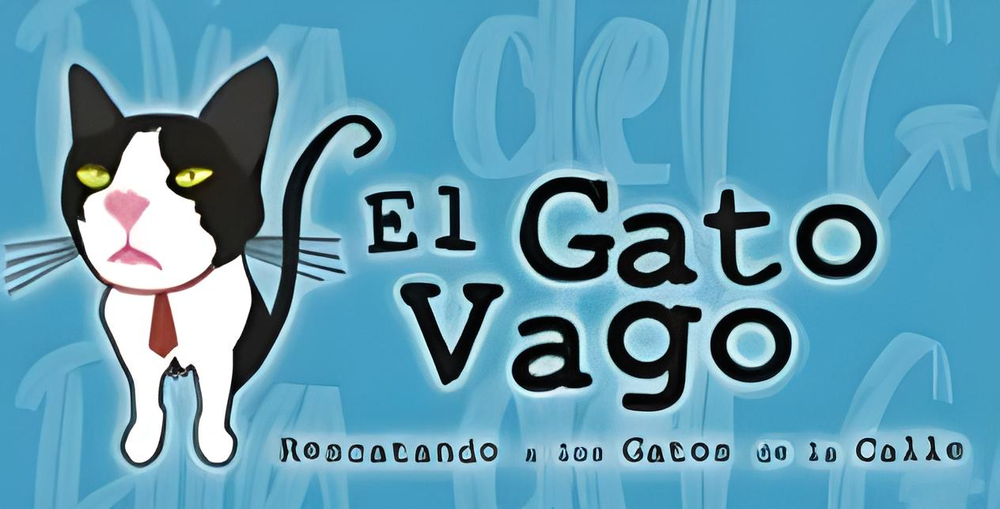

Animal protection association that collaborates with the Secretariat of Public Security via the Animal Surveillance Brigade. They carry out clinical and ethological rehabilitation work to reintegrate animals into homes where they are cared for and loved.
It is a non-profit civil association with service focused on the adoption of cats. They promote responsible ownership and knowledge about cats through different campaigns.
Non-profit organization that houses a community of cats, promotes adoptions, organizes spay/neuter campaigns, disseminates information about cat care and raises funds.
Mexican designers, artists and printers who create the products with which they promote their work, also host a community of cats, promote adoptions, organize sterilization campaigns, disseminate information, participate in bazaars and events.
Non-profit organization, they spread content about kittens for adoption while running a shelter for them.
It is a vegan cafe and supermarket as well as an adoption center, you can eat while you live with the kittens that have been rescued which you can adopt, the funds from everything consumed go to the needs of the kittens.
With the intention to give care, shelter and a voice to the abandoned, neglected, injured and mistreated animals of Zihuatanejo focusing in giving refuge and rehabilitation to wounded, sick or endangered animals, and promoting the adoption of dogs and cats.